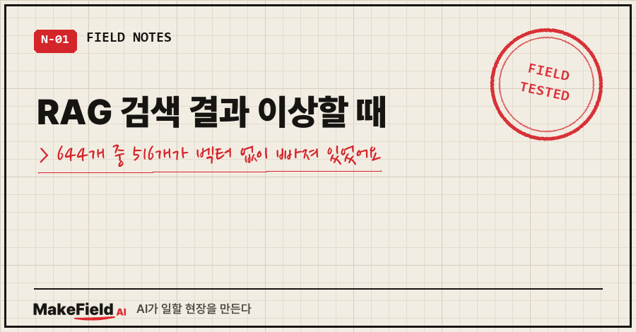
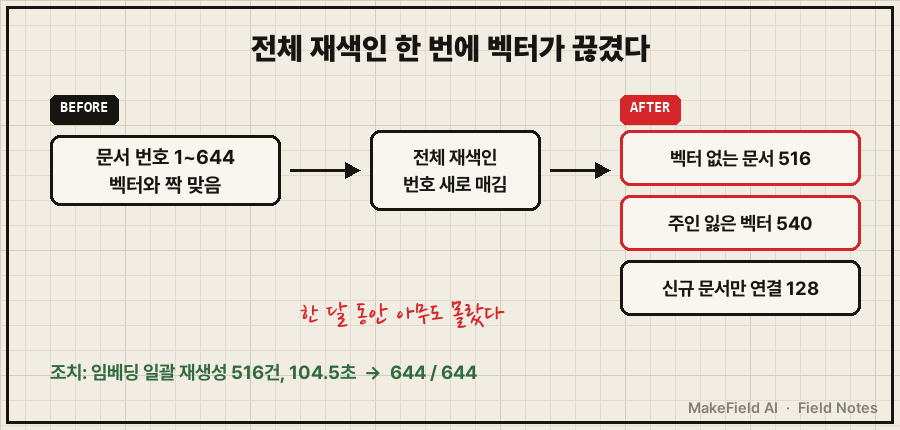
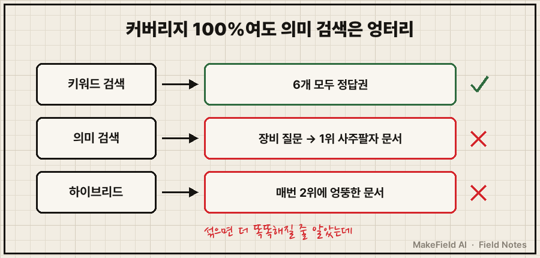
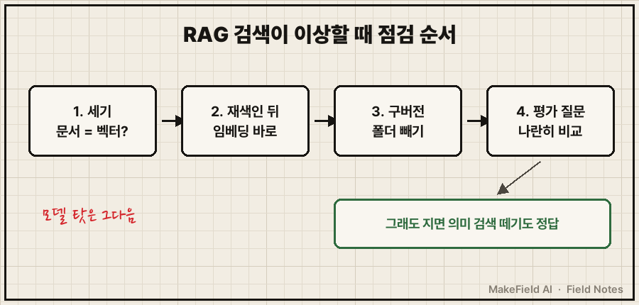

RAG 검색 결과 이상할 때, 모델이나 질문을 고치기 전에 먼저 할 일이 하나 있어요.
검색 대상에 벡터가 붙은 문서가 실제로 몇 개인지 세는 것.
제 개인 지식베이스는 문서 644개 중 128개에만 벡터가 붙어 있었습니다. 한 달 전 전체 재색인 한 번에 문서 번호가 새로 매겨졌는데 벡터는 다시 만들지 않아서, 516개가 의미 검색에서 조용히 빠져 있었어요. (2026년 10월 27일 실측, 로컬 임베딩 모델 기준)
그리고 516개를 다 채워 넣은 뒤에, 더 기막힌 게 보였어요.
장비 관련 질문을 던졌는데 1등으로 사주팔자 정리 문서를 가져오더라고요.
15년째 제조 현장에서 설비와 데이터를 붙들고 사는 엔지니어입니다. 퇴근 후엔 제 문서를 통째로 넣어 둔 AI 비서를 키우고 있는데, 이번 글은 그 비서의 검색 창고가 반쯤 비어 있던 이야기예요.
1. 시작은 봇이 남긴 한 줄이었어요
RAG란 AI가 답하기 전에 내 문서에서 관련 내용을 먼저 찾아 붙여 주는 방식이에요. 저는 여기에 두 가지 검색을 섞어 두었습니다.
- 키워드 검색: 단어가 그대로 들어간 문서를 찾음
- 의미(벡터) 검색: 문장을 숫자 묶음(벡터)으로 바꿔, 뜻이 가까운 문서를 찾음
- 하이브리드 검색: 두 결과 순위를 섞음
7월에 만들어 두고 한동안 잊고 있었어요. 그러다 10월 26일 밤, 디스코드 봇에게 어떤 RAG 정리 자료를 분석시켰는데 이런 보고가 왔습니다.
네 시스템에는 하이브리드 검색이 이미 들어가 있는데,
실제로 쓰는 곳이 없고, 돌려보니 성능도 나빠.다음 날 아침에 제가 물었어요. "RAG도 정상동작 안한다는 디스코드 보고가 있던데 한번 확인해볼래?"
2. RAG 검색 결과가 이상하면 뭐부터 세야 하나요
문서 수와 벡터 수, 그리고 짝이 안 맞는 개수부터 셉니다. 질문 6개를 세 방식으로 돌려 보니 봇 보고는 사실이었어요. 그런데 숫자를 세 보니 보고에도 없던 근본 원인이 나왔습니다.
| 항목 | 조치 전 (10-27) | 조치 후 |
|---|---|---|
| 지식 문서 | 644 | 644 |
| 벡터가 붙은 문서 | 128 | 644 |
| 벡터 없는 문서 | 516 | 0 |
| 주인 없는 고아 벡터 | 540 | 0 |
원인은 9월 26일에 돌린 전체 재색인이었어요. 재색인은 문서 목록을 비우고 처음부터 다시 등록하면서 번호를 새로 매깁니다. 그런데 벡터는 옛 번호에 묶인 채 남았어요. 옛 번호 벡터 540개는 주인을 잃었고, 새 번호 문서 대부분은 벡터가 없었죠.
그 뒤로 새로 들어온 문서만 하나씩 벡터를 받아서 128개까지 왔던 거예요. 한 달 동안 아무도 몰랐습니다.

제가 쓰는 점검 쿼리는 이 정도예요. 이름은 일반화했습니다.
SELECT COUNT(*) FROM docs; -- 문서 수
SELECT COUNT(*) FROM vectors; -- 벡터 수
SELECT COUNT(*) FROM docs d
WHERE NOT EXISTS (SELECT 1 FROM vectors v WHERE v.doc_id = d.id); -- 벡터 없는 문서
SELECT COUNT(*) FROM vectors v
WHERE NOT EXISTS (SELECT 1 FROM docs d WHERE d.id = v.doc_id); -- 고아 벡터오늘(10월 28일) 다시 돌린 결과는 이렇습니다.
knowledge 644
vectors 644
missing 0
orphan 0조치는 단순했어요. 임베딩 일괄 재생성, 516건에 104.5초. 원본 파일은 하나도 안 건드리고 인덱스만 다시 만들었습니다.
3. 경고문은 코드 주석에만 있었어요
황당한 건, 이 사고를 막는 문장이 이미 코드 안에 있었다는 거예요. 7월에 검색 기능을 만들면서 남긴 주석입니다.
# - reindex() 후에는 kb_id가 바뀌므로 embed_all()을 다시 실행할 것주석은 사람이 읽어야 일을 해요. 그런데 재색인을 돌린 날 이 줄을 읽은 사람이 없었고, 임베딩 재생성은 예약 작업에도 없었습니다. 의미 검색 함수를 실제로 부르는 자동화도 0곳이라, 결과가 이상해도 알아챌 통로가 없었어요.
예전에 「AI 지식관리, 문서 500개 쌓고 절반을 못 찾은 이유」에서 분류 축 얘기를 했었죠. 그땐 제가 못 찾는 문제였고, 이번엔 검색기 자체가 절반을 못 보는 문제였어요.
4. 다 채웠는데도 사주팔자를 가져왔어요
커버리지 644/644. 이제 되겠지 했는데, 질문 6개를 다시 돌려 보니 의미 검색은 여전히 엉터리였어요.
| 방식 | 결과 (질문 6개) |
|---|---|
| 키워드 검색 | 6개 모두 정답권 |
| 의미 검색 | 장비 질문 → 사주팔자 정리 문서 / 다른 업무 질문 → 정부 보고서·종합소득세 메모 |
| 하이브리드 | 매번 2위 자리에 엉뚱한 문서가 끼어듦 |
"의미 검색을 섞으면 더 똑똑해진다"는 기대와 반대였어요. 지금 상태의 의미 검색은 검색을 돕는 게 아니라 오염시키고 있었습니다. 덤으로 구버전 보관 폴더까지 색인돼서, 같은 문서가 본판·구판 두 건으로 잡히는 것도 나왔고요.

봇이 짚은 원인 후보는 세 가지였어요. 문서 하나를 벡터 하나로만 만든다, 소형 모델이다, 본문 앞 1,500자만 넣는다.
모델 카드를 직접 열어 봤어요. 제가 쓰는 공개 다국어 모델 paraphrase-multilingual-MiniLM-L12-v2는 문장을 384차원 벡터로 바꾸고, 입력 한도(max_seq_length)가 128토큰으로 적혀 있습니다. 1,500자를 넣어도 실제로는 그보다 훨씬 앞부분만 반영됐을 수 있다는 뜻이에요. 다만 이게 오답의 주원인인지는 아직 재 보지 않았어요(추정).
5. 그래서 지금은 이 순서로 봅니다
아직 의미 검색을 살릴지 뗄지는 결정 전이에요. 대신 확인 순서는 바꿨습니다.
- 세기: 문서 수 = 벡터 수인지, 벡터 없는 문서·고아 벡터가 0인지
- 재색인 뒤 묶기: 전체 재색인을 했으면 임베딩 재생성을 같은 날 바로 이어서
- 빼기: 구버전 폴더는 색인 대상에서 제외
- 나란히 비교: 평가 질문으로 키워드·의미·하이브리드를 같은 표에 놓고 보기

고민 중인 선택지는 넷이에요.
| 선택지 | 기대 | 지금 판단 |
|---|---|---|
| 평가 세트 (질문 20~30개 + 정답 문서) | 고쳤는지 숫자로 판정 | 가장 먼저. 없으면 뭘 바꿔도 좋아졌는지 모름 |
| 리랭커 (상위 결과 재정렬) | 순위 개선 | 효과 미검증, CPU 속도부터 재야 함 |
| 문서 쪼개기 + 모델 교체 | 긴 문서 반영 | 미착수 |
| 의미 검색 떼고 키워드만 | 오염 제거 | 측정 후에도 지면 이것도 정답 |
자주 묻는 질문
Q. RAG 검색 결과 이상할 때, 모델부터 바꾸면 안 되나요?
바꿔도 되지만 순서가 문제예요. 저처럼 벡터가 반쯤 비어 있으면 어떤 모델로 바꿔도 결과가 이상합니다. 개수 세는 데 1분이면 끝나요.
Q. 규칙 파일이나 메모(md)를 고치면 RAG가 또 꼬이나요?
저도 이걸 물었어요. 제 구성에선 아니었습니다. 위험한 건 파일 수정이 아니라 전체 재색인 명령이었어요. 그래서 지금은 바뀐 파일만 하나씩 색인하고, 반영 후에 "벡터 없는 문서 0"을 확인합니다. 10월 27일 규칙 정리 뒤에도 644개, 누락 0이었어요.
Q. 의미 검색이 키워드 검색보다 항상 나은 거 아닌가요?
제 문서 644개, 질문 6개에선 반대였어요. 표본이 작아서 일반화는 못 하지만, 평가 질문으로 나란히 비교해 보기 전엔 "AI 검색이라 더 낫다"고 믿지 않기로 했습니다.
위의 개수 세기 쿼리 네 줄은 1분이면 돌아가요. 저는 그 네 줄을 안 돌려서 한 달 동안 반쪽짜리 검색을 쓰고 있었습니다.
평가 세트 결과가 나오면 의미 검색을 살렸는지 뗐는지, makefield.ai에 숫자로 적어 둘게요.
출처
- Hugging Face, sentence-transformers/paraphrase-multilingual-MiniLM-L12-v2 모델 카드 — "maps sentences & paragraphs to a 384 dimensional dense vector space", max_seq_length 128 → https://huggingface.co/sentence-transformers/paraphrase-multilingual-MiniLM-L12-v2 (2026-10-28 확인)
- 측정 환경: 2026-10-27 개인 PC 실측(개인 지식베이스 문서 644개, 로컬 CPU 임베딩, 질문 6개)
태그: #RAG검색결과이상할때 #RAG #RAG임베딩 #임베딩누락 #벡터검색 #시맨틱검색 #하이브리드검색 #키워드검색 #재색인 #개인지식베이스 #로컬임베딩 #sentencetransformers #AI검색오류 #막힐때해결 #MakeFieldAI